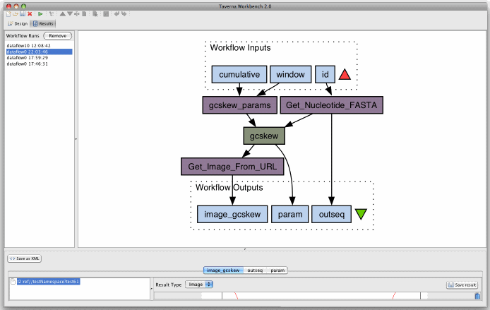
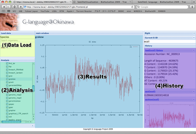
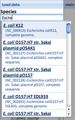

| Version 40 (modified by gaou, 16 years ago) |
|---|
Satellite meeting for G-language development
Topics
Development of REST/SOAP web services for G-language Genome Analysis Environment
- http://www.g-language.org/
- http://www.ncbi.nlm.nih.gov/pubmed/12538262
- http://www.jstage.jst.go.jp/article/jpestics/31/3/282/_pdf
Participants
- Kazuharu Arakawa
- Nobuhiro Kido
- Kazuki Oshita
togoWS
Name: togoWS - runs togoWS REST web services
Description:
This is a wrapper around togoWS REST web services provided at
http://togows.dbcls.jp/.
Usage:
#search
@ids = togoWS(-search=>"keyword", -db=>"database");
#entry
$entry = togoWS(@ids);
Options:
-search required option for keyword searching.
-db name of the database for searching and entry retrieval
required for searching, but not required for entry
retrieval, since corresponding database is automatically
selected from the ID format. However, majority of the
databases simply use large numbers as IDs, which all
result in "pubmed" as the databases. Therefore, use
of this option is necessary for IDs that are only numbers.
-field field name for entry retrieval (optional)
-format format name for entry retrieval (optional)
REST
- Base URL:
genome flatfile access
- list of available genomes:
- Syntax:
- http://rest.g-language.org/[genome]/[gene]/[feature]
- Genomes (nucleotide composition)
- http://rest.g-language.org/[genome]
- examples:
- http://rest.g-language.org/ecoli (G-language preset genome)
- http://rest.g-language.org/NC_000908 (NCBI RefSeq? accession)
- http://rest.g-language.org/B619CD (G-language REST temporary reference id)
- http://rest.g-language.org/ecoli (G-language preset genome)
- examples:
- http://rest.g-language.org/[genome]
- Genes
- http://rest.g-language.org/[genome]/[gene]
- examples:
- http://rest.g-language.org/ecoli/recA (common gene name)
- http://rest.g-language.org/ecoli/b2699 (canonical gene name / locus tag)
- http://rest.g-language.org/ecoli/FEATURE5804 (G-language feature id)
- http://rest.g-language.org/ecoli/CDS2646 (G-language CDS id)
- http://rest.g-language.org/ecoli/recA (common gene name)
- examples:
- http://rest.g-language.org/[genome]/[gene]
- features
- http://rest.g-language.org/[genome]/[gene]/[feature]
- examples:
- http://rest.g-language.org/mgen/metX/gene (gene name)
- http://rest.g-language.org/mgen/metX/translation (amino acid sequence)
- http://rest.g-language.org/mgen/*/translation (amino acid sequence of all genes)
- http://rest.g-language.org/mgen/metX/gene (gene name)
- examples:
- http://rest.g-language.org/[genome]/[gene]/[feature]
file upload
- Base URL:
http://rest.g-language.org/upload/ - Syntax
- POST a file to fileform=file
- File types are automatically interpreted by the system. Supported formats are: ABI, ACE, ALF, BSML, CTF, EMBL, Entrez Gene, Exp, FastA, FastQ, GCG, GenBank?, Phd, PIR, PLN, raw, SCF, SWISS.
- Return
- Returns a unique reference ID for the uploaded file. You can use this ID for the rest of the analysis so that the large file is not transferred over the network.
genome analysis methods
- list of available analysis methods:
- Syntax:
- http://rest.g-language.org/[genome]/[method]/[required input (if any)]/[option1=value]/[option2=value]...
- Genome data access
- examples:
- http://rest.g-language.org/ecoli/before_startcodon/recA (5' upstream sequence of recA gene)
- http://rest.g-language.org/ecoli/get_geneseq/recA (nucleotide sequence of recA gene)
- http://rest.g-language.org/ecoli/cds (get a list of all feature ids)
- http://rest.g-language.org/ecoli/before_startcodon/recA (5' upstream sequence of recA gene)
- examples:
- Analysis methods
- examples:
- http://rest.g-language.org/ecoli/gcskew (GC skew analysis - produces a graph)
- http://rest.g-language.org/ecoli/gcskew/cumulative=1 (cumulative GC skew)
- http://rest.g-language.org/ecoli/gcskew/at=1/cumulative=1/output=f/ (cumulative AT skew - output as csv data)
- http://rest.g-language.org/ecoli/gcsi (GC Skew Index analysis - single double value)
- http://rest.g-language.org/ecoli/gcskew (GC skew analysis - produces a graph)
- examples:
SOAP
- WSDL:
- http://soap.g-language.org/g-language.wsdl
- argument value
- based upon G-language original
- you can use some species ("ecoli","bsub","mgen","cyano", "pyro" ) ,file contents or USA format instead of $gb
- Taverna 2:
- example
- workflow
- Screen shot

- example
AJAX/CGI gateway
- URL:
- Usage

- (1)Choose genome file. You can search the species our server has (see following figure) , or load by temporary reference ID or preset genome ID. File upload will be available.
 - (2)Select analysis method from functions list.
- (3)Results come here and automatically added to History section.
- (4)All of the analysis you did are available here to check the previous analysis results.
- (1)Choose genome file. You can search the species our server has (see following figure) , or load by temporary reference ID or preset genome ID. File upload will be available.
- TODO
- [Data load] add file upload form
- [Analysis] categorize by function orthology
- [Analysis] hint tip
- [Analysis] parameter input box
- [History] 'Send to Galaxy'
- [History] 'Get analysis result and pass to Galaxy'
- [History] design improvement
- Galaxy Connection:
- access to AJAX/CGI gateway from Galaxy => ok
Perl Wrapper
- Available at CPAN:
- http://search.cpan.org/~gaou/Bio-Glite-0.01/lib/Bio/Glite.pm
- simple install with "sudo cpan Bio::Glite"
- Bio::Glite has all of the functions G-language API, and very efficiently handles data through REST web service of G-language Project. Source code is extremely lightweight (>100KB), and requires very few (mostly standard) modules.
Attachments
-
pict5.gif
 (23.5 KB) - added by t07122ko
16 years ago.
(23.5 KB) - added by t07122ko
16 years ago.
ScreenShot? (Taverna)
-
getFasta2gcskew.t2flow
(22.2 KB) - added by t07122ko
16 years ago.
G-language Taverna Workflow (Example)
-
incre.png
(40.0 KB) - added by t07505nk
16 years ago.
-
section.png
(78.0 KB) - added by t07505nk
16 years ago.


{kind=link}
{kind=link}
{kind=link}